BLI data of G3BP1-NTF2 binding to Caprin-1 and USP10
1 Script info
BLI/Octet data deposited as Supplemental data on DRYAD.
2 Data import
Data were pre-processed and analyzed using the ForteBio software. Raw and processed data were imported into R using the script below.
not all loaded libraries are required.
library(ggplot2)
library(tidyverse)
library(plyr)
library(tidyr)
library(readr)
library(readxl)
library(knitr)
#library(nls)
library(nlstools)
library(nlshelper)
library(minpack.lm)
library(broom)
library(nls.multstart)
library(purrr)
library(gnm)
library(visreg)
library(KRLS)
library(glmnet)
library(glmnetUtils)
library(magrittr)
library(forcats)
library(emmeans)
library(modelr)
library(cowplot)
library(ggridges)
library(ggrepel)
library(ggforce)
library(fitdistrplus)
library(MASS)
library(hexbin)
library(dMod)
library(kimisc)
library(ggsci)
library(bookdown)
library(tinytex)
library(kableExtra)
library(DT)
library(xfun)
###from stackoverflow
#' @title pr_mutate_when
#' @description mutate a column within a dplyr pype only on a subset of rows
#' specified by a condition
#' Retrieved from a StackOverflow answer (https://stackoverflow.com/a/34170176/6871135)
#' @param data a `data.frame` (or `tibble` or `data.table`)
#' @param ... expression to be evaluated to filter on rows
#' @return `data frame`
#' @details DETAILS
#' @examples
#' \dontrun{
#' library(magrittr)
#' mtcars %>% mutate_when(
#' mpg > 22, list(cyl = 100),
#' disp == 160, list(cyl = 200))
#'
#' }
#' @rdname pr_mutate_when
#' @export
#' @author Kevin Ushey
pr_mutate_when <- function(data, ...) {
dots <- eval(substitute(alist(...)))
for (i in seq(1, length(dots), by = 2)) {
condition <- eval(dots[[i]], envir = data)
mutations <- eval(dots[[i + 1]], envir = data[condition, , drop = FALSE])
data[condition, names(mutations)] <- mutations
}
data
}import all data
###
data_overview_tib <- tribble(~rec, ~exprun_digit, ~meas_type,
"BOTH", 5, "mut",
"BOTH", 6, "mut",
"BOTH", 7, "mut",
"BOTH", 8, "mut",
"BOTH", 9, "mut",
"BOTH", 10, "mut",
"BOTH", 11, "mut",
"BOTH", 12, "mut",
"BOTH", 13, "mut",
"USP", 1, "ini",
"USP", 2, "tit",
"USP", 3, "tit",
"USP", 4, "tit",
"USP", 5, "tit",
"USP", 6, "tit",
"USP", 7, "tit",
"USP", 9, "tit",
"USP", 10, "tit",
"USP", 11, "tit",
#"USP", 12, "phc",
#"USP", 13, "phc",
#"USP", 14, "phc",
#"USP", 15, "phc",
#"USP", 16, "phc",
#"USP", 17, "phc",
"CAP", 4, "tit",
"CAP", 5, "tit",
"CAP", 7, "tit",
"CAP", 8, "phc",
"CAP", 9, "tit",
"CAP", 10, "tit",
"CAP", 11, "tit",
"CAP", 14, "tit",
"CAP", 15, "tit",
"CAP", 16, "tit",
"CAP", 17, "tit",
"CAP", 18, "tit",
"CAP", 19, "tit")
#"CAP", 20, "phc",
#"CAP", 21, "phc",
#"CAP", 22, "phc",
#"CAP", 23, "phc")
### find all relevant files using a filename pattern.
data_dir_all <- enframe(list.dirs(path = "./titrations", full.names = TRUE, recursive=FALSE)) %>% mutate(filterme = str_detect(value,"USP|CAP")) %>% subset(filterme == "TRUE") %>% dplyr::select(-filterme,-name) %>% mutate(dirname=paste(value,"/",sep="")) %>% mutate(fileslist = purrr::map(dirname, ~list.files(path = ., pattern = "*.xls",recursive = FALSE))) %>% unnest() %>% mutate(sample_temp=str_extract(value,pattern="[:digit:]{6}xAR2Gx[:digit:][:digit:]xUSPxEXP[:digit:][:digit:]|[:digit:]{6}xAR2Gx[:digit:][:digit:]xCAPxEXP[:digit:][:digit:]|[:digit:]{6}xAR2Gx[:digit:][:digit:]xUSPCAPxEXP[:digit:][:digit:]")) %>% mutate(sample=str_extract(sample_temp,pattern="AR2Gx[:digit:][:digit:]xUSPxEXP[:digit:][:digit:]|AR2Gx[:digit:][:digit:]xCAPxEXP[:digit:][:digit:]|AR2Gx[:digit:][:digit:]xUSPCAPxEXP[:digit:][:digit:]")) %>% mutate(expnumber = str_extract(sample,pattern="EXP[:digit:][:digit:]")) %>% mutate(., sample_test = str_extract(sample, "USPCAP|USP|CAP")) %>% mutate(., rec = case_when(sample_test == "USP" ~ sample_test, sample_test == "CAP" ~ sample_test, sample_test == "USPCAP" ~ "BOTH", TRUE ~ "STH")) %>% mutate(., exprun = str_extract(expnumber, pattern = "[:digit:][:digit:]")) %>% mutate(., exprun_digit = as.numeric(exprun)) %>% dplyr::select(-sample_temp, -exprun) %>% left_join(., data_overview_tib)
#
### filter sensor titration data
data_dir_sensors <- data_dir_all %>% mutate(fileslist_filtered = str_detect(fileslist,pattern="^[:alnum:][:digit:].xls")) %>% subset(fileslist_filtered == "TRUE") %>% unite(.,"readme", c("dirname", "fileslist"),sep="") %>% dplyr::select(-fileslist_filtered,-value, -expnumber, -sample_test) %>% mutate(sensorid=str_extract(readme,pattern="[A-H][:digit:].xls")) %>% mutate(sensorid=str_extract(readme,pattern="[A-H][:digit:]")) %>%
mutate(sensor=str_extract(sensorid,pattern="[A-H]")) %>% unite(., col = "sampleid", c("sample", "sensorid"), sep = "_", remove = FALSE) %>% dplyr::select(., readme, sampleid, rec, exprun_digit, meas_type, sensorid, sensor)
### filter sensor parameters (sensors, ligand, concentration): IMPORTANT: modify the results page of the xls report file; and save as tab del file (txt format); then rename to xls
data_dir_all_pars <- data_dir_all %>% mutate(fileslist_filtered = str_detect(fileslist,pattern="^[:alnum:][:digit:].xls")) %>% dplyr::filter(fileslist_filtered=="FALSE") %>% mutate(filtername = str_detect(fileslist,"results.xls")) %>% subset(filtername == "TRUE") %>% dplyr::select(-fileslist_filtered,-filtername) %>% unite(.,"readme", c("dirname", "fileslist"),sep="") %>% dplyr::select(-value) %>% mutate(parameters = purrr::map(readme,~read_tsv(.,skip=0, locale = locale(decimal_mark = ".")))) %>% mutate(parameters_sel = purrr::map(parameters, ~dplyr::select(.,sensorid=sensor,ligand,conc_nM = conc,type))) %>% dplyr::select(sample, parameters_sel) %>% unnest() %>% unite(., col = "sampleid", c("sample", "sensorid"), sep = "_", remove = FALSE)
data_dir_all_sensors_pars <- data_dir_sensors %>% group_by(., sampleid, readme, rec, exprun_digit, meas_type, sensorid, sensor) %>% dplyr::summarize() %>% right_join(., data_dir_all_pars)
#%>% mutate(sensorid=str_extract(readme,pattern="[A-H][:digit:]")) %>%
#mutate(sensor=str_extract(sensorid,pattern="[A-H]")) %>% unite(., col = "sampleid", c("sample", "sensorid"), sep = "_", remove = FALSE)
#data_dir_all_samples <- data_dir_all %>% group_by(sample) %>% nest(.)
###combine parameters with sensor data
#data_pall_csv_titrations
data_dir_all_csv <- data_dir_all_sensors_pars %>% mutate(csv = purrr::map(readme,~read_tsv(.,skip=5, col_names = c("time","octet","simulated"))) )
#data_pall_csv_conc_titrations
#data_pall_csv_conc_titrations_ligand %>% dplyr::filter(meas_type=="tit")
data_dir_all_csv_titrations <- data_dir_all_csv %>% ungroup() %>% dplyr::select(-readme) %>% mutate(conc_nM_dimer = conc_nM/2, csv_shifted = purrr::map(csv,~dplyr::mutate(.,time_shifted = time - min(time)))) %>% dplyr::select(-csv)
data_pall_csv_conc_titrations_eq <- data_dir_all_csv_titrations %>% mutate(csv_shifted_eqphase = purrr::map(csv_shifted, ~filter(.,time_shifted > 1150 & time_shifted < 1200))) %>% mutate(csv_shifted_eqvalue = purrr::map(csv_shifted_eqphase, ~summarize(.,octet_eq = mean(octet)))) %>% unnest(., c("csv_shifted_eqvalue"))
data_pall_csv_conc_titrations_eq_leftjoin <- data_pall_csv_conc_titrations_eq %>% dplyr::select(., sampleid, conc_nM_dimer, octet_eq)
data_dir_all_csv_titrations_unnested <- data_dir_all_csv_titrations %>% left_join(., data_pall_csv_conc_titrations_eq_leftjoin) %>% unnest(cols = c("csv_shifted")) %>% group_by(., rec, meas_type) %>% group_modify(., ~mutate(.,index=group_indices(.,exprun_digit))) %>% ungroup()
### plot eq values against concentration: 1200s association
#for (i in 1:3){dplyr::mutate(., sampleid_counter = row_number(rec_conc_plot)) %>% dplyr::mutate(., plotme = case_when(plotme == "plotme" & sampleid != "AR2Gx05xCAPxEXP04_B5" ~ plotme) )
#
data_dir_all_csv_titrations_all_nested <- data_dir_all_csv_titrations_unnested %>% dplyr::filter(.,meas_type == "tit") %>% dplyr::filter(., rec == "USP" | (rec == "CAP" & index > 3)) %>% group_by(., rec, meas_type, sampleid, exprun_digit, sensorid, sensor, sample, ligand, conc_nM, type, conc_nM_dimer, octet_eq, index) %>% nest(.) %>% dplyr::mutate(., conc_ranges = cut(conc_nM_dimer, breaks = c(0,0.99, 9.99, 49.9, 499, 999, 19999, Inf), labels = c(0, 1, 10, 50, 500, 1000, 20000))) %>% dplyr::mutate(., sampleid_conc = paste(sampleid, conc_nM_dimer, sep ="_")) %>% group_by(., rec, conc_ranges) %>% dplyr::arrange(., c(conc_nM_dimer), .by_group = TRUE) %>% ungroup() %>% group_by(., rec, conc_ranges) %>% group_modify(., ~mutate(., median_octet = ((median(octet_eq)-octet_eq )^2)^0.5 )) %>% group_modify(., ~mutate(., plotme = case_when(median_octet == min(median_octet) ~ "plotme"))) %>% dplyr::mutate(., rec_conc_plot = paste(rec, plotme, conc_ranges, sep ="_")) %>% ungroup() %>% group_by(rec, conc_ranges) %>% group_modify(., ~mutate(., sampleid_counter = row_number(plotme)))3 Pre-Plots
3.1 Dose-response data points obtained from titration data
data_dir_all_csv_titrations_plot <- data_dir_all_csv_titrations_all_nested %>% drop_na(plotme) %>% dplyr::filter(., sampleid_counter == 1) %>% unnest(., cols = c("data")) %>% ggplot(data=., aes(x=time_shifted, y=octet, colour=conc_nM_dimer, group = sampleid)) +
#ylab("Abs /mAU") +#xlim(c(0,1000)) +#ylim(c(-5,50)) + #geom_vline(xintercept = mwlines, color = "red", linetype="dashed", size=0.5) +
#geom_point(size = 2, stroke = 0.1, alpha=0.2, colour = "black") +
geom_line(size=0.5) +
scale_x_continuous("time: min", breaks = c(0, 600, 1200, 1800, 2400), labels = function(breaks) ((breaks/60))) +
scale_y_continuous("octet: nm", limits = c(0,1)) +
scale_colour_gradient2(low="green", mid="blue", high="red", space ="Lab",midpoint=2, trans = "log10") + #,
facet_grid(rec ~ .) +
#facet_grid_paginate(index ~ rec, ncol=2, nrow=4, page = i) +
theme_light() +
theme(legend.position = "none")
print(data_dir_all_csv_titrations_plot)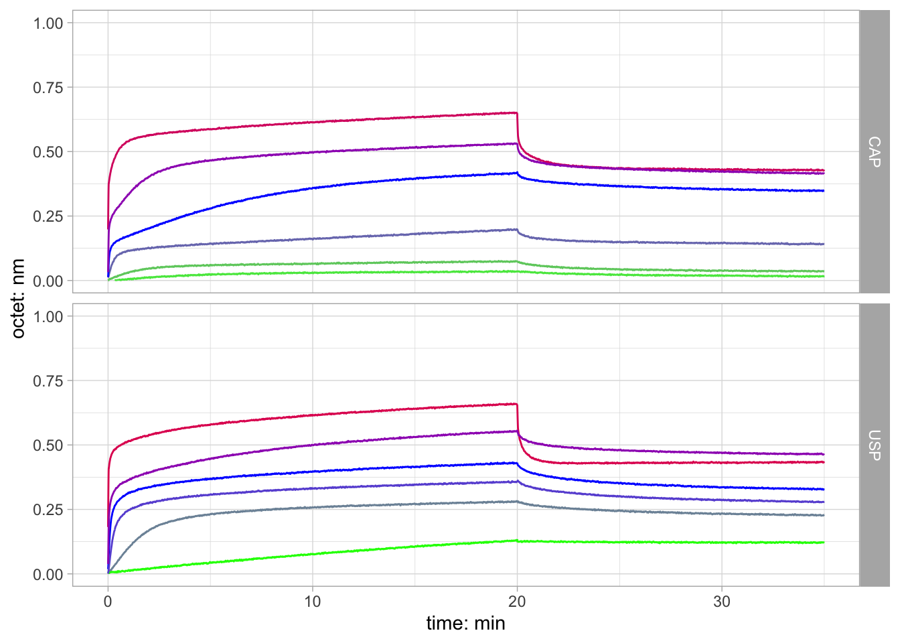
#ggsave(file="ggplot_ligand_ligand_temp.jpeg", plot=data_dir_all_csv_titrations_plot,device="jpeg")
ggsave(file="./ggplot_ligand_ligand.jpeg", device="jpeg", width = 90, height = 90, units = c("mm"))
#ggsave(file="./ggplot_ligand_ligand.ps", width = 60, height = 90, units = c("mm"))
#}Plot used in panel B of supplemental Figure S4 in associated manuscript.
data_pall_csv_conc_titrations_ligand_eq <- data_pall_csv_conc_titrations_eq %>% dplyr::filter(meas_type == "tit")
data_pall_csv_conc_titrations_ligand_eq_logplot <- data_pall_csv_conc_titrations_ligand_eq %>% ggplot(data=., aes(x=conc_nM_dimer, y=octet_eq, color=conc_nM_dimer, group=factor(sampleid))) + #xlab("Vol /mL") + #ylab("Abs /mAU") +#xlim(c(0,1000)) +#ylim(c(-5,50)) + #geom_vline(xintercept = mwlines, color = "red", linetype="dashed", size=0.5) +
geom_point(size=2) +
scale_x_log10("c(ntf2): nM") +
scale_y_continuous("pseudo-eq octet: nm") +
scale_color_gradient2("c(ntf2): nM", low="green", mid="blue", high="red", space ="Lab",midpoint=3, trans = "log10") + #,
facet_grid(rec ~ .) +
theme_light()
print(data_pall_csv_conc_titrations_ligand_eq_logplot)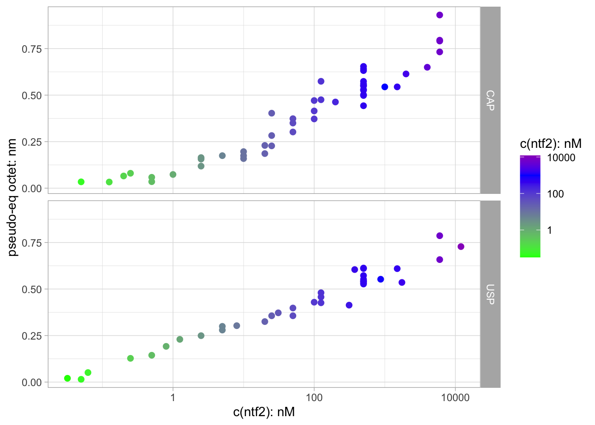
ggsave(file="ggplot_ligand_titrations_eqconc_log.jpeg", plot=data_pall_csv_conc_titrations_ligand_eq_logplot,device="jpeg")
#ggsave(file="ggplot_ligand_titrations_eqconc_log.ps", plot=data_pall_csv_conc_titrations_ligand_eq_logplot,device="ps")Pseudo-equilibrium octet values plotted against the NTF2-dimer concentration.
3.2 Sensor Loads
Before continuing with data fitting and further analysis, the next chunk compares sensor loads of the CAP and USP ligands.
### filter sensor titration data
sensor_spec_double <- tribble(~.name, ~.value, ~sensor, ~group,
"A_time", "time", "A", "AE",
"A_octet", "octet", "A","AE",
"B_time", "time", "B","BF",
"B_octet", "octet", "B","BF",
"C_time", "time", "C","CG",
"C_octet", "octet", "C","CG",
"D_time", "time", "D","DH",
"D_octet", "octet", "D","DH",
"E_time", "time", "E","AE",
"E_octet", "octet", "E","AE",
"F_time", "time", "F","BF",
"F_octet", "octet", "F","BF",
"G_time", "time", "G","CG",
"G_octet", "octet", "G","CG",
"H_time", "time", "H","DH",
"H_octet", "octet", "H", "DH")
#there was an error with sensor G; that one is missing in the data. so the importet G columns are in fact H columns
sensor_spec_single <- tribble(~.name, ~.value, ~sensor, ~group,
"A_time", "time", "A", "ALL",
"A_octet", "octet", "A","ALL",
"B_time", "time", "B","ALL",
"B_octet", "octet", "B","ALL",
"C_time", "time", "C","ALL",
"C_octet", "octet", "C","ALL",
"D_time", "time", "D","ALL",
"D_octet", "octet", "D","ALL",
"E_time", "time", "E","ALL",
"E_octet", "octet", "E","ALL",
"F_time", "time", "F","ALL",
"F_octet", "octet", "F","ALL",
"G_time", "time", "G","ALL",
"G_octet", "octet", "G","ALL",
"H_time", "time", "H", "ALL",
"H_octet", "octet", "H", "ALL")
data_dir_sensors_raw <- enframe(list.files(path = "./titrations_raw_data", full.names = TRUE, recursive=FALSE)) %>% mutate(filterme = str_detect(value,"USP|CAP")) %>% subset(filterme == "TRUE") %>% dplyr::select(-filterme,-name) %>% mutate(filename=value) %>% mutate(sample_temp=str_extract(value,pattern="[:digit:]{6}xAR2Gx[:digit:][:digit:]xUSPxEXP[:digit:][:digit:]|[:digit:]{6}xAR2Gx[:digit:][:digit:]xCAPxEXP[:digit:][:digit:]|[:digit:]{6}xAR2Gx[:digit:][:digit:]xUSPCAPxEXP[:digit:][:digit:]")) %>% mutate(sample=str_extract(sample_temp,pattern="AR2Gx[:digit:][:digit:]xUSPxEXP[:digit:][:digit:]|AR2Gx[:digit:][:digit:]xCAPxEXP[:digit:][:digit:]|AR2Gx[:digit:][:digit:]xUSPCAPxEXP[:digit:][:digit:]")) %>% mutate(expnumber = str_extract(sample,pattern="EXP[:digit:][:digit:]")) %>% mutate(., sample_test = str_extract(sample, "USPCAP|USP|CAP")) %>% mutate(., rec = case_when(sample_test == "USP" ~ sample_test, sample_test == "CAP" ~ sample_test, sample_test == "USPCAP" ~ "BOTH", TRUE ~ "STH")) %>% mutate(., exprun = str_extract(expnumber, pattern = "[:digit:][:digit:]")) %>% mutate(., exprun_digit = as.numeric(exprun)) %>% mutate(., meas_type = case_when(exprun_digit < 3 ~ "load_tit", TRUE ~ "raw_tit"))
pivot_longer_sensor_spec_f <- function(df, refgroup){
if (refgroup == "single"){
df_out <- df %>% pivot_longer_spec(., sensor_spec_single) %>% arrange(., sensor) %>% drop_na(., time)
} else {
df_out <- df %>% pivot_longer_spec(., sensor_spec_double) %>% arrange(., sensor) %>% drop_na(., time)
}
return(df_out)
}
sensor_load_f <- function(df, refgroup, end_time){
if (refgroup == "double"){
df_out <- df %>% dplyr::mutate(., AE_octet = A_octet-E_octet,BF_octet = B_octet-F_octet,CG_octet = C_octet-G_octet,DH_octet = D_octet-H_octet) %>% dplyr::select(., time = A_time, AE_octet, BF_octet, CG_octet, DH_octet) %>% pivot_longer(., cols = c(2:ncol(.))) %>% arrange(., name) %>% dplyr::filter(., time > (end_time-0.1) & time < (end_time+0.1)) %>% dplyr::select(., name, value)
} else {
df_out <- df %>% dplyr::mutate(., AG_octet = A_octet-G_octet,BG_octet = B_octet-G_octet,CG_octet = C_octet-G_octet, DG_octet = D_octet-G_octet, EG_octet = E_octet-G_octet, FG_octet = F_octet-G_octet) %>% dplyr::select(., time = A_time, AG_octet, BG_octet, CG_octet, DG_octet, EG_octet, FG_octet) %>% pivot_longer(., cols = c(2:ncol(.))) %>% arrange(., name) %>% dplyr::filter(., time > (end_time-0.1) & time < (end_time+0.1)) %>% dplyr::select(., name, value)
}
return(df_out)
}
sensor_times <- tribble(~rec, ~exprun_digit, ~meas_type, ~end_time, ~refgroup,
"USP", 1, "load_tit", 1500, "double",
"CAP", 2, "load_tit", 2750, "double",
"BOTH", 1, "load_tit", 2000, "single")
tit_sensor_times <- tribble(~rec, ~meas_type,~start_time, ~end_time,
"USP", "raw_tit", 400, 2500,
"CAP", "raw_tit", 400, 2500)
sensor_plot_f <- function(df, end_time){
plot_obj <- ggplot(data=df, aes(x=time, y=octet, color=sensor)) +
#xlab("Vol /mL") + #ylab("Abs /mAU") +#xlim(c(0,1000)) +#ylim(c(-5,50)) + #geom_vline(xintercept = mwlines, color = "red", linetype="dashed", size=0.5) +
geom_line(size=1) +
scale_x_continuous(limits = c(0, end_time)) +
theme_light() +
scale_color_aaas() +
#scale_color_gradient2(low="green", mid="blue", high="red", space ="Lab",midpoint=3, trans = "log10") + #,
facet_grid(group ~ .)
return(plot_obj)
}
sensor_load_pull_f <- function(df, end_time){
df_value <- df %>% dplyr::filter(., time > (end_time-0.1) & time < (end_time+0.1)) %>% dplyr::select(., name, value)
return(df_value)
}
### plot sensor load kinetics
### for this particular dataset: sensor G in the "BOTH" receptor group had an error, and was not used during data export;
### thus G is in fact H!
data_dir_sensors_raw_xls <- data_dir_sensors_raw %>% dplyr::filter(., meas_type == "load_tit") %>% dplyr::mutate(.,filterme = str_detect(filename, "xlsx")) %>% dplyr::filter(., filterme == "TRUE") %>% mutate(xls = purrr::map(filename,~read_xlsx(.,range = "A2:P20000", col_names = c("A_time", "A_octet", "B_time", "B_octet", "C_time", "C_octet", "D_time", "D_octet", "E_time", "E_octet", "F_time", "F_octet", "G_time", "G_octet","H_time", "H_octet"))) ) %>% mutate(xls_comma = purrr::map(xls,~dplyr::mutate_if(.,is.character, as.double))) %>% left_join(., sensor_times) %>% mutate(xls_longer = purrr::pmap(list(xls_comma, refgroup), pivot_longer_sensor_spec_f)) %>% dplyr::mutate(., sensor_plot = purrr::pmap(list(xls_longer,end_time),sensor_plot_f)) %>% dplyr::mutate(., sensor_plot_name = paste("sensorload", rec, exprun_digit, meas_type, "0.jpeg", sep ="_")) %>% mutate(xls_load = purrr::pmap(list(xls_comma,refgroup, end_time), sensor_load_f))
pwalk(list(data_dir_sensors_raw_xls$sensor_plot_name, data_dir_sensors_raw_xls$sensor_plot), ggsave)Plots saved as sensorload_.jpeg. Surfaces generated as described in M&Ms of the manuscript: Titration experiments: sensorload_CAP_2_load_tit_0* and sensorload_USP_1_load_tit_0
Comparative experiments: sensorload_BOTH_1_load_tit_0
3.3 Background binding of NTF2 to sensor surface
### plot selected ligand titration kinetics as raw data: non-substracted sensor and ligand surfaces
titration_plot_f <- function(df, start_time, end_time){
plot_obj <- ggplot(data=df, aes(x=time, y=octet, color=sensor_type)) +
#xlab("Vol /mL") + #ylab("Abs /mAU") +#xlim(c(0,1000)) +#ylim(c(-5,50)) + #geom_vline(xintercept = mwlines, color = "red", linetype="dashed", size=0.5) +
geom_line(size=1) +
scale_x_continuous(limits = c(start_time, end_time)) +
theme_light() +
scale_color_aaas() +
#scale_color_gradient2(low="green", mid="blue", high="red", space ="Lab",midpoint=3, trans = "log10") + #,
facet_grid(group ~ .)
return(plot_obj)
}
titraw_ref_pull_f <- function(df, start_time){
df_value <- df %>% dplyr::filter(., time > (start_time-50) & time < (start_time+50)) %>% group_by(sensor) %>% dplyr::summarize(., octet_ref = mean(octet)) %>% dplyr::select(., sensor, octet_ref)
return(df_value)
}
data_dir_sensors_raw_titration_xls <- data_dir_sensors_raw %>% dplyr::filter(., meas_type == "raw_tit") %>% dplyr::mutate(.,filterme = str_detect(filename, "xlsx")) %>% dplyr::filter(., filterme == "TRUE") %>% mutate(xls = purrr::map(filename,~read_xlsx(.,range = "A2:P20000", col_names = c("A_time", "A_octet", "B_time", "B_octet", "C_time", "C_octet", "D_time", "D_octet", "E_time", "E_octet", "F_time", "F_octet", "G_time", "G_octet","H_time", "H_octet"))) ) %>% mutate(xls_comma = purrr::map(xls,~dplyr::mutate_if(.,is.character, as.double))) %>% mutate(xls_longer = purrr::map(xls_comma,~pivot_longer_spec(., sensor_spec_double))) %>% mutate(xls_longer_sorted = purrr::map(xls_longer,~arrange(., sensor))) %>% mutate(xls_longer_sorted = purrr::map(xls_longer_sorted,~dplyr::mutate(., sensor_type = case_when(sensor == "A" ~ "ligand", sensor == "B" ~ "ligand", sensor == "C" ~ "ligand", sensor == "D" ~ "ligand", TRUE ~ "reference")))) %>% left_join(., tit_sensor_times) %>% dplyr::mutate(., sensor_plot = purrr::pmap(list(xls_longer_sorted, start_time, end_time),titration_plot_f)) %>% dplyr::mutate(., sensor_plot_name = paste("raw_tit", rec, exprun_digit, meas_type, "0.jpeg", sep ="_")) %>% mutate(xls_load = purrr::map(xls_comma,~dplyr::mutate(., AE_octet = A_octet-E_octet,BF_octet = B_octet-F_octet,CG_octet = C_octet-G_octet,DH_octet = D_octet-H_octet))) %>% mutate(xls_load = purrr::map(xls_load,~dplyr::select(., time = A_time, AE_octet, BF_octet, CG_octet, DH_octet))) %>% mutate(xls_load_longer = purrr::map(xls_load,~pivot_longer(., cols = c(2:ncol(.)) ))) %>% mutate(xls_load_sorted = purrr::map(xls_load_longer,~arrange(., name))) %>% dplyr::mutate(ref_sub = purrr::pmap(list(xls_longer_sorted, start_time), titraw_ref_pull_f)) %>% mutate(xls_longer_sorted_sub = purrr::pmap(list(xls_longer_sorted,ref_sub), left_join)) %>% mutate(xls_longer_sorted_sub = purrr::map(xls_longer_sorted_sub, ~dplyr::mutate(., octet_sub = octet - octet_ref))) %>% mutate(xls_longer_sorted_sub = purrr::map(xls_longer_sorted_sub, ~dplyr::select(., sensor, group, time, octet = octet_sub, sensor_type))) %>% dplyr::mutate(., sensor_sub_plot = purrr::pmap(list(xls_longer_sorted_sub, start_time, end_time),titration_plot_f))
pwalk(list(data_dir_sensors_raw_titration_xls$sensor_plot_name, data_dir_sensors_raw_titration_xls$sensor_sub_plot), ggsave)Plots saved as sensorload_*.jpeg. Surfaces generated as described in M&Ms of the manuscript.
Titration experiments: sensorload_CAP_2_load_tit_0 and sensorload_USP_1_load_tit_0
Comparative experiments: sensorload_BOTH_1_load_tit_0
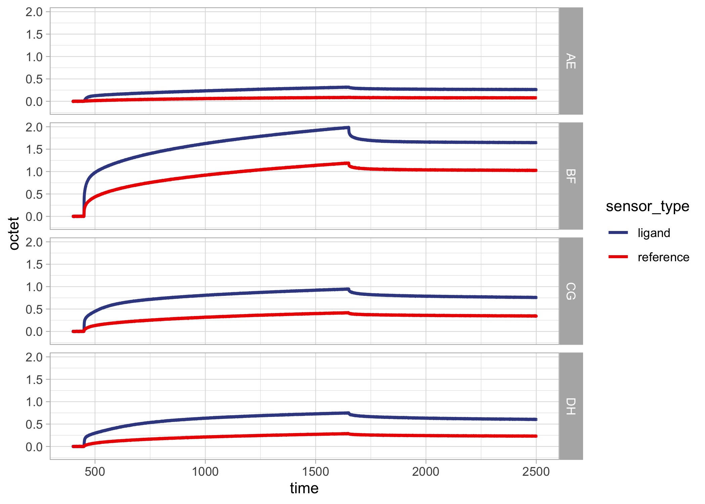
Example for background binding to reference surface. Corresponding to sample name AR2Gx05xCAPxEXP19, with NTF2 concentrations of 0.04, 12, 1, and 0.4 uM from top to bottom.
3.4 Sensor immobilization levels
sensor_plot_tribble <- tribble(~rec, ~name, ~lig_type, ~ligand, ~fill,
"BOTH", "AG_octet", "MUT0", "USP", "A",
"BOTH", "BG_octet", "MUT0", "USP", "B",
"BOTH", "CG_octet", "MUT1", "USP", "C",
"BOTH", "DG_octet", "MUT0", "CAP", "A",
"BOTH", "EG_octet", "MUT0", "CAP", "B",
"BOTH", "FG_octet", "MUT1", "CAP", "C",
"USP", "AE_octet", "MUT0", "USP", "A",
"USP", "BF_octet", "MUT0", "USP", "B",
"USP", "CG_octet", "MUT0", "USP", "C",
"USP", "DH_octet", "MUT0", "USP", "D",
"CAP", "AE_octet", "MUT0", "CAP", "A",
"CAP", "BF_octet", "MUT0", "CAP", "B",
"CAP", "CG_octet", "MUT0", "CAP", "C",
"CAP", "DH_octet", "MUT0", "CAP", "D")
data_dir_sensors_xls_colplot <- data_dir_sensors_raw_xls %>% drop_na(meas_type) %>% dplyr::select(rec, exprun_digit, meas_type, xls_load) %>% unnest(., c("xls_load")) %>% left_join(., sensor_plot_tribble) %>% dplyr::mutate(., boxgroup = paste(rec, ligand, lig_type, sep = "_")) %>% ggplot(., aes(x = ligand, y = value, group = boxgroup, color = lig_type)) +
geom_jitter(width = 0.1, shape = 21, stroke = 1) +
#facet_grid(rec ~ .) +
scale_color_aaas() +
scale_y_continuous(limits = c(0,1.5)) +
#coord_flip() +
theme_light() +
facet_grid(. ~ rec)
print(data_dir_sensors_xls_colplot)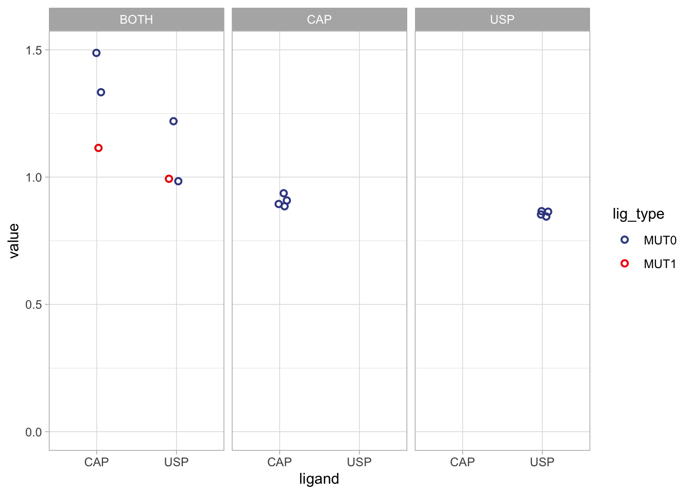
ggsave("./sensorload_col.jpeg", data_dir_sensors_xls_colplot, width = 90, height = 45, units = c("mm"))
ggsave("./sensorload_col.ps", data_dir_sensors_xls_colplot, width = 90, height = 45, units = c("mm"))
### plot raw sensor loading dataImmobilization levels of the sensor columns. value=BLI nm, MUT0 = wild-type, MUT1=mutants as described. BOTH=comoparative experiment, CAP/USP=titration experiments.
The GFP-ligand fusion constructs were immobilized on the sensor surfaces mainly for three reasons: (1) the fused ligands comprise short peptide sequences without forming any complex domain structures, so that any regeneration procedure should not have any negative effect on their structure or function (2) most prob GFP is almost always the entity that is coupled to the surface so that the fused ligand is freely available for interaction (3) unfolding/denaturation of GFP due to regeneration should not have a major impact on the binding of NTF2 to the ligand, but may present free hydophobic residues for competetive interaction with NTF2.
3.5 Sensor stability
In order to verfiy that the regeneration procedure did not negatively impact the NTF2:ligand interactions, the same NTF2 concentration of 500 nM was applied in all titration experiments, in order to track the binding levels in each experiment:
data_pall_csv_conc_titrations_ligand_eq_stab <- data_pall_csv_conc_titrations_eq %>% dplyr::filter(., rec != "BOTH" & conc_nM == 1000) %>% mutate(csv_shifted_eqphase = purrr::map(csv_shifted, ~filter(.,time_shifted > 1150 & time_shifted < 1200))) %>% mutate(csv_shifted_eqvalue = purrr::map(csv_shifted_eqphase, ~summarize(.,octet_eq = mean(octet))))
data_pall_csv_conc_titrations_ligand_eq_stab_comb_plot <- data_pall_csv_conc_titrations_ligand_eq_stab %>% dplyr::select(rec, exprun_digit, octet_eq) %>% group_by(., rec) %>% dplyr::mutate(., index = row_number(rec)) %>% ggplot(data=., aes(x=index, y=octet_eq)) + #xlab("Vol /mL") + #ylab("Abs /mAU") +#xlim(c(0,1000)) +#ylim(c(-5,50)) + #geom_vline(xintercept = mwlines, color = "red", linetype="dashed", size=0.5) +
geom_point(size=2) +
geom_line(size = 0.5) +
scale_y_continuous(limits = c(0,1)) +
#scale_color_gradient2(low="green", mid="blue", high="red", space ="Lab",midpoint=3.7, trans = "log10") + #,
scale_color_aaas() +
theme_light() +
facet_grid(rec ~ .)
print(data_pall_csv_conc_titrations_ligand_eq_stab_comb_plot)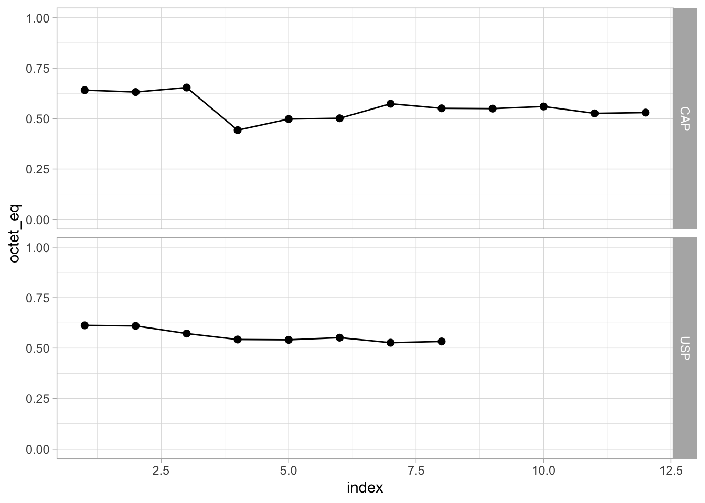
ggsave(filename="ggplot_sensor_stability.jpeg", plot=data_pall_csv_conc_titrations_ligand_eq_stab_comb_plot, width = 80, height = 50, units = c("mm"))
ggsave(filename="ggplot_sensor_stability.ps", plot=data_pall_csv_conc_titrations_ligand_eq_stab_comb_plot,width = 80, height = 50, units = c("mm"))Binding levels of NTF2 to the ligands immobilized on the surface were relatively stable for both CAP and USP. However, NTF2 bindin to CAP was slighly higher in the first four titration runs. This was most probably due to a slight mismatch in concentration while preparing the NTF2 solutions from two different batches. Index correponds to titration round.
3.6 Hill fit to pseudo-equilibrium data
pre-load fits - required for the knitted document
this chunk would run the fitting if # is removed
# Hill-fit https://doi.org/10.1016/j.vascn.2014.08.006
#KD fit: taken from MST publication
##Langmuir isotherm OShannessy (1996) ANALYTICAL BIOCHEMISTRY
norm_purrr_f <- function(df){
octet_max <- 0.7 #max(octet_eq)
df_norm <- df %>% mutate(., octet_norm = ((octet_eq-min(octet_eq))/(octet_max-min(octet_eq))), conc_nM_dimer = conc_nM/2)
return(df_norm)
}
## taken out only for knitting
#data_pall_csv_conc_titrations_ligand_eq_fit <- data_pall_csv_conc_titrations_ligand_eq %>% dplyr::filter(., sampleid != "AR2Gx05xCAPxEXP04") %>% dplyr::select(-csv_shifted, -csv_shifted_eqphase) %>% group_by(rec) %>% nest() %>% mutate(data_norm = purrr::map(data,~norm_purrr_f(.))) %>% mutate(eq_KD_fit = purrr::map(data,~nlsLM(octet_eq ~ (R*conc_nM_dimer/(KD_eq+conc_nM_dimer)), start = list(R=0.7,KD_eq=50), lower=c(0.6,10^-12), upper=c(1.2,Inf), data=.,weights = (1/octet_eq)))) %>% mutate(KD_results = map(eq_KD_fit, augment)) %>% mutate(eq_Hill_fit = purrr::map(data,~nlsLM(octet_eq ~ (octet_zero+(octet_max-octet_zero)/(1+(EC50/conc_nM_dimer)^hslope ) ), start = list(octet_max=0.8, octet_zero=0, EC50=100,hslope=1), lower=c(0.5, 0, 1, 0.3), upper=c(0.9, 0, 2000, 2), data=., weights = (1/octet_eq)))) %>% mutate(hill_results = map(eq_Hill_fit, augment)) %>% mutate(kd_results = map(eq_KD_fit, augment)) %>% mutate(kd_pars = map(eq_KD_fit, tidy)) %>% mutate(hill_pars = map(eq_Hill_fit, tidy)) %>% mutate(hill_results_mod = purrr::map(hill_results, ~dplyr::select(., octet_eq, conc_nM_dimer, hill_fit = ".fitted"))) %>% mutate(kd_results_mod = purrr::map(kd_results, ~dplyr::select(., octet_eq, conc_nM_dimer, kd_fit = ".fitted"))) ### write fit parameters as csv files
data_pall_csv_conc_titrations_ligand_eq_fit_pars_table <- data_pall_csv_conc_titrations_ligand_eq_fit %>% mutate(., hill_pars_long = purrr::map(hill_pars, ~pivot_longer(., 2:5, names_to = "hill_stats", values_to = "hill_stats_value")), kd_pars_long = purrr::map(kd_pars, ~pivot_longer(., 2:5, names_to = "kd_stats", values_to = "kd_stats_value")) ) %>% mutate(., hill_pars_long_names = purrr::map(hill_pars_long, ~dplyr::select(., hill_term = term, 2:3)), kd_pars_long_names = purrr::map(kd_pars_long, ~dplyr::select(., kd_term = term, 2:3)) )%>% dplyr::select(rec, hill_pars_long_names, kd_pars_long_names)
data_pall_csv_conc_titrations_ligand_eq_fit_hill_estimate <- data_pall_csv_conc_titrations_ligand_eq_fit_pars_table %>% dplyr::select(., hill_pars_long_names) %>% unnest(., c("hill_pars_long_names")) %>% dplyr::filter(., (hill_term == "EC50" | hill_term == "hslope") & (hill_stats == "estimate" | hill_stats == "std.error"))
data_pall_csv_conc_titrations_ligand_eq_fit_hill_estimate_vline <- data_pall_csv_conc_titrations_ligand_eq_fit_hill_estimate %>% pivot_wider(., id_cols = c("rec", "hill_term"), names_from = c("hill_stats"), values_from = c("hill_stats_value")) %>% dplyr::filter(., hill_term == "EC50") %>% dplyr::mutate(., vline_estimate = estimate, vline_plus = estimate+std.error, vline_minus = estimate-std.error) %>% dplyr::select(., -hill_term, -std.error, -estimate) %>% pivot_longer(., c(2:ncol(.))) %>% dplyr::select(., rec, vline_name = name, vline_value = value) %>% dplyr::mutate(., vline_size = case_when(vline_name == "vline_estimate" ~ 2, vline_name == "vline_plus" ~ 1, vline_name == "vline_minus" ~ 1))
data_pall_csv_conc_titrations_ligand_eq_fit_pars_table %>% dplyr::select(., hill_pars_long_names) %>% unnest(., c("hill_pars_long_names")) %>% write_csv2(.,path = "./ggplot_ligand_titrations_eqconc_fit_hill_pars.csv")
data_pall_csv_conc_titrations_ligand_eq_fit_pars_table %>% dplyr::select(., kd_pars_long_names) %>% unnest(., c("kd_pars_long_names")) %>% write_csv2(.,path = "./ggplot_ligand_titrations_eqconc_fit_kd_pars.csv")
###plot Kd, Hill fit
data_pall_csv_conc_titrations_ligand_eq_fit_kd <- data_pall_csv_conc_titrations_ligand_eq_fit %>% dplyr::select(rec, kd_results_mod) %>% unnest(kd_results_mod)
data_pall_csv_conc_titrations_ligand_eq_fit_hill <- data_pall_csv_conc_titrations_ligand_eq_fit %>% dplyr::select(rec, hill_results_mod) %>% unnest(., hill_results_mod)
data_pall_csv_conc_titrations_ligand_eq_fit_kd_hill <- data_pall_csv_conc_titrations_ligand_eq_fit_kd %>% left_join(.,data_pall_csv_conc_titrations_ligand_eq_fit_hill)
data_pall_csv_conc_titrations_ligand_eq_fit_kd_hill_plot <- data_pall_csv_conc_titrations_ligand_eq_fit_kd_hill %>% dplyr::mutate(., gglegend = case_when(rec == "USP" ~ "awt",rec == "CAP" ~ "awt")) %>% left_join(., data_pall_csv_conc_titrations_ligand_eq_fit_hill_estimate_vline) %>% ggplot(data=., aes(x=conc_nM_dimer, y=octet_eq, color=gglegend)) + #xlab("Vol /mL") + #ylab("Abs /mAU") +#xlim(c(0,1000)) +#ylim(c(-5,50)) + #geom_vline(xintercept = mwlines, color = "red", linetype="dashed", size=0.5) +
geom_point(size = 1, shape = 21, stroke = 1) +
#geom_line(aes(x=conc_nM_dimer, y=kd_fit)) +
geom_line(aes(x=conc_nM_dimer, y=hill_fit)) +
scale_x_log10() +
#scale_color_gradient2(low="green", mid="blue", high="red", space ="Lab",midpoint=3, trans = "log10") + #,
facet_grid(rec ~ .) +
scale_y_continuous(limits = c(0,1.0)) +
scale_color_aaas() +
geom_vline(aes(xintercept = vline_value, linetype = factor(vline_size*-1))) +
theme_light() +
theme(legend.position = "none")
print(data_pall_csv_conc_titrations_ligand_eq_fit_kd_hill_plot)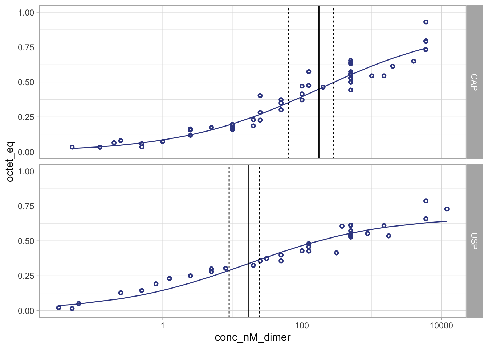
ggsave(file="ggplot_ligand_titrations_eqconc_fit.jpeg", plot=data_pall_csv_conc_titrations_ligand_eq_fit_kd_hill_plot,device="jpeg", width = 60, height = 90, units = c("mm"))
ggsave(file="ggplot_ligand_titrations_eqconc_fit.ps", plot=data_pall_csv_conc_titrations_ligand_eq_fit_kd_hill_plot,device="ps", width = 60, height = 90, units = c("mm"))Pseudo-eq binding data were fit using Hill equation. Shown in panel C of Figure 2.
3.7 mutant control data
Immobilized mutant and wild-type ligands on the surface, NTF2 as analyte. In ITC the ligand mutants were non-binders. However, BLI revealed approximated 10x reduced binding.
data_pall_csv_conc_titrations_mutants <- data_dir_all_csv_titrations %>% dplyr::filter(., meas_type == "mut") %>% dplyr::filter(., exprun_digit > 7) %>% group_by(., rec) %>% group_modify(., ~mutate(.,index=group_indices(.,exprun_digit))) %>% ungroup() %>% mutate(analyte = case_when(sensor == "A" ~ "USP", sensor == "B" ~ "USP", sensor == "C" ~ "USPdFdF", sensor == "D" ~ "CAP", sensor == "E" ~ "CAP", sensor == "F" ~ "CAPdFdL", sensor == "G" ~ "USP", TRUE ~ "ELSE")) %>% mutate(., analyte_group = str_extract(analyte, "USP|CAP")) %>% dplyr::mutate(., analyte_type = case_when(analyte == "CAP" ~ "MUT0", analyte == "CAPdFdL" ~ "MUT1", analyte == "USP" ~ "MUT0", analyte == "USPdFdF" ~ "MUT1",)) %>% mutate(csv_shifted_eqphase = purrr::map(csv_shifted, ~filter(.,time_shifted > 1150 & time_shifted < 1200))) %>% mutate(csv_shifted_eqvalue = purrr::map(csv_shifted_eqphase, ~summarize(.,octet_eq = mean(octet)))) %>% unnest(., c("csv_shifted_eqvalue"))data_pall_csv_conc_titrations_mutants_100nM_figplot <- data_pall_csv_conc_titrations_mutants %>% dplyr::mutate(., gglegend = case_when(analyte == "CAP" ~ "awt",analyte == "USP" ~ "awt",analyte == "USPdFdF" ~ "bmut", analyte == "CAPdFdL" ~ "bmut")) %>% mutate(., box_group = paste(analyte, conc_nM_dimer, sep = "_")) %>% dplyr::filter(., index == 1) %>% dplyr::filter(., sensor != "B") %>% unnest(., cols = c("csv_shifted")) %>% ggplot(data=., aes(x=time_shifted, y=octet, color = gglegend, group=factor(sampleid))) +
xlab("time: min") + #ylab("Abs /mAU") +#xlim(c(0,1000)) +#ylim(c(-5,50)) + #geom_vline(xintercept = mwlines, color = "red", linetype="dashed", size=0.5) +
geom_line(size=0.5) +
scale_x_continuous(breaks = c(0, 600, 1200, 1800), labels = function(breaks) ((breaks/60))) +
scale_y_continuous(limits = c(0, 1.5)) +
#scale_color_gradient2(low="green", mid="blue", high="red", space ="Lab",midpoint=3, trans = "log10") + #,
#facet_grid_paginate(index+conc_nM ~ analyte_group, ncol=2, nrow=3, page = i) +
facet_grid(analyte_group ~ .) +
scale_color_aaas() +
theme_light() +
theme(legend.position = "none")
print(data_pall_csv_conc_titrations_mutants_100nM_figplot)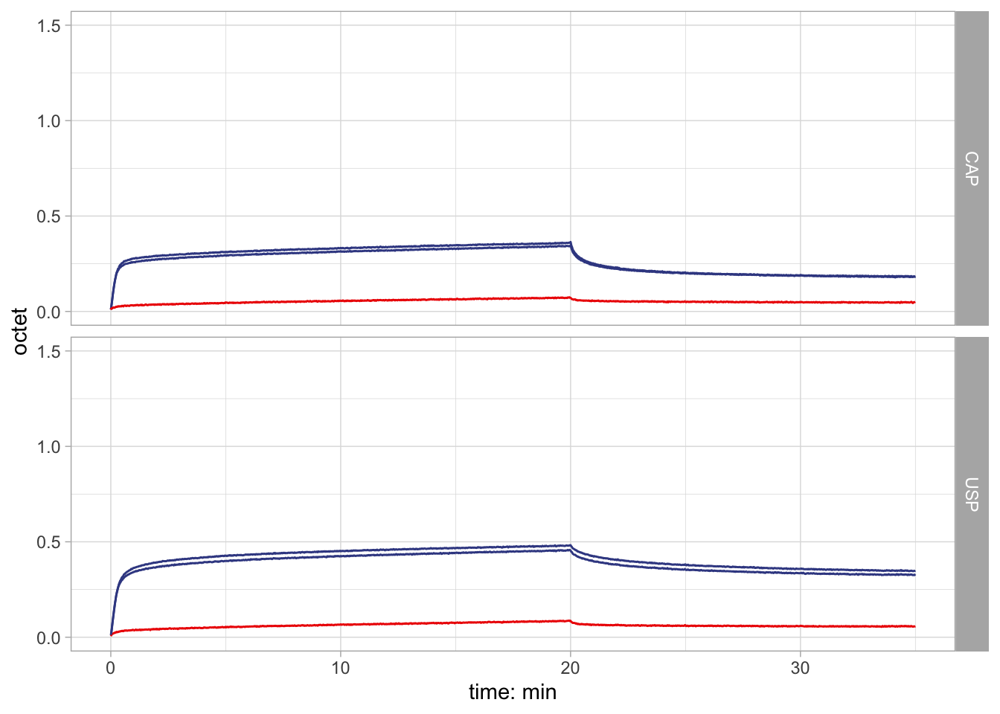
#facet_grid(expnumber ~ ligand+type)
ggsave(filename="data_pall_csv_conc_titrations_mutants_plot_100nM.ps", data_pall_csv_conc_titrations_mutants_100nM_figplot, width = 45, height = 60, units = "mm")
ggsave(filename="data_pall_csv_conc_titrations_mutants_plot_100nM.jpeg", data_pall_csv_conc_titrations_mutants_100nM_figplot, width = 45, height = 60, units = "mm")Mutant control data at 100 nM NTF2 concentration. Shown in panel C of Figure 2.
data_pall_csv_conc_titrations_mutants_1000nM_figplot <- data_pall_csv_conc_titrations_mutants %>% dplyr::mutate(., gglegend = case_when(analyte == "CAP" ~ "awt",analyte == "USP" ~ "awt",analyte == "USPdFdF" ~ "bmut", analyte == "CAPdFdL" ~ "bmut")) %>% mutate(., box_group = paste(analyte, conc_nM_dimer, sep = "_")) %>% dplyr::filter(., index == 4) %>% dplyr::filter(., sensor != "B") %>% unnest(., cols = c("csv_shifted")) %>% ggplot(data=., aes(x=time_shifted, y=octet, color = gglegend, group=factor(sampleid))) +
xlab("time: min") + #ylab("Abs /mAU") +#xlim(c(0,1000)) +#ylim(c(-5,50)) + #geom_vline(xintercept = mwlines, color = "red", linetype="dashed", size=0.5) +
geom_line(size=0.5) +
scale_x_continuous(breaks = c(0, 600, 1200, 1800), labels = function(breaks) ((breaks/60))) +
scale_y_continuous(limits = c(0, 1.5)) +
#scale_color_gradient2(low="green", mid="blue", high="red", space ="Lab",midpoint=3, trans = "log10") + #,
#facet_grid_paginate(index+conc_nM ~ analyte_group, ncol=2, nrow=3, page = i) +
facet_grid(analyte_group ~ .) +
scale_color_aaas() +
theme_light() +
theme(legend.position = "none")
print(data_pall_csv_conc_titrations_mutants_1000nM_figplot)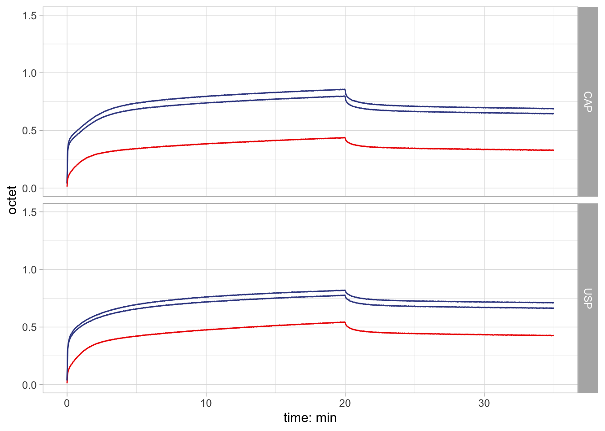
#facet_grid(expnumber ~ ligand+type)
ggsave(filename="data_pall_csv_conc_titrations_mutants_plot_1000nM.ps", data_pall_csv_conc_titrations_mutants_1000nM_figplot, width = 45, height = 60, units = "mm")
ggsave(filename="data_pall_csv_conc_titrations_mutants_plot_1000nM.jpeg", data_pall_csv_conc_titrations_mutants_1000nM_figplot, width = 45, height = 60, units = "mm")Mutant control data at 1000 nM NTF2 concentration. Shown in panel B of Supplemental Figure S4.
data_dir_sensors_USPCAP_colplot <- data_dir_sensors_raw_xls %>% dplyr::filter(., sample_test != "USPCAP") %>% drop_na(meas_type) %>% dplyr::select(rec, exprun_digit, meas_type, xls_load) %>% unnest(., c("xls_load")) %>% left_join(., sensor_plot_tribble) %>% dplyr::mutate(., boxgroup = paste(rec, ligand, lig_type, sep = "_")) %>% ggplot(., aes(x = meas_type, y = value, group = boxgroup, color = lig_type)) +
geom_jitter(width = 0.1, shape = 21, stroke = 1) +
geom_boxplot() +
#facet_grid(rec ~ .) +
scale_color_aaas() +
#scale_x_continuous() +
scale_y_continuous("octet: nm") +
#coord_flip() +
theme_light() +
coord_cartesian(ylim = c(0, 1)) +
theme(legend.position = "none") +
facet_grid(rec ~ .)
#print(data_dir_sensors_xls_colplot)
ggsave("./sensorload_USPCAP_col.jpeg", data_dir_sensors_USPCAP_colplot, width = 45, height = 90, units = c("mm"))
ggsave("./sensorload_USPCAP_col.ps", data_dir_sensors_USPCAP_colplot, width = 45, height = 90, units = c("mm"))
### plot raw sensor loading dataSensorload kinetic data.
data_dir_sensors_BOTH_colplot <- data_dir_sensors_raw_xls %>% dplyr::filter(., sample_test == "USPCAP") %>% drop_na(meas_type) %>% dplyr::select(rec, exprun_digit, meas_type, xls_load) %>% unnest(., c("xls_load")) %>% left_join(., sensor_plot_tribble) %>% dplyr::mutate(., boxgroup = paste(rec, ligand, lig_type, sep = "_")) %>% ggplot(., aes(x = lig_type, y = value, group = boxgroup, color = lig_type)) +
geom_jitter(width = 0.1, shape = 21, stroke = 1) +
geom_boxplot() +
#facet_grid(rec ~ .) +
scale_color_aaas() +
#scale_x_continuous() +
scale_y_continuous("octet: nm") +
#coord_flip() +
theme_light() +
coord_cartesian(ylim = c(0, 1.5)) +
theme(legend.position = "none") +
facet_grid(ligand ~ .)
#print(data_dir_sensors_xls_colplot)
ggsave("./sensorload_BOTH_col.jpeg", data_dir_sensors_BOTH_colplot, width = 45, height = 90, units = c("mm"))
ggsave("./sensorload_BOTH_col.ps", data_dir_sensors_BOTH_colplot, width = 45, height = 90, units = c("mm"))Figures illustrate the loading of the sensors with the two ligands through amino-coupling. The final ligand levels are at similar octet levels of about 0.8 nm. Immobilization levels reported for both the titration (separate CAP and USP) and mutant control data (BOTH). Wild-type and mutant in blue and red, respectively.
### mutant eq boxplot
data_pall_csv_conc_titrations_mutant_eq <- data_pall_csv_conc_titrations_mutants %>% dplyr::filter(., sensor != "B") %>% group_by(analyte, conc_nM_dimer) %>% group_modify(., ~mutate(.,median_group=median(octet_eq))) %>% ungroup() %>% group_by(analyte_group) %>% group_modify(., ~mutate(.,max_ana_group=max(median_group))) %>% group_modify(., ~mutate(., octet_eq_norm = (octet_eq/max_ana_group*100)))
data_pall_csv_conc_titrations_mutant_eq_logplot <- data_pall_csv_conc_titrations_mutant_eq %>% dplyr::mutate(., gglegend = case_when(analyte == "CAP" ~ "awt",analyte == "USP" ~ "awt",analyte == "USPdFdF" ~ "bmut", analyte == "CAPdFdL" ~ "bmut")) %>% mutate(., box_group = paste(analyte, conc_nM_dimer, sep = "_")) %>% ggplot(data=., aes(x = conc_nM_dimer, y=octet_eq, color=gglegend, group=factor(box_group))) + #xlab("Vol /mL") + #ylab("Abs /mAU") +#xlim(c(0,1000)) +#ylim(c(-5,50)) + #geom_vline(xintercept = mwlines, color = "red", linetype="dashed", size=0.5) +
geom_boxplot(position = "identity") +
geom_jitter(size = 1, shape = 21, stroke = 1, width = 0.2) +
scale_x_log10(breaks = c(50, 500)) +
#scale_y_continuous() +
coord_cartesian(ylim = c(0, 1.5)) +
#scale_color_gradient2(low="green", mid="blue", high="red", space ="Lab",midpoint=3, trans = "log10") + #,
facet_grid(analyte_group ~ .) +
scale_color_aaas() +
theme_light() +
theme(legend.position = "none")
print(data_pall_csv_conc_titrations_mutant_eq_logplot)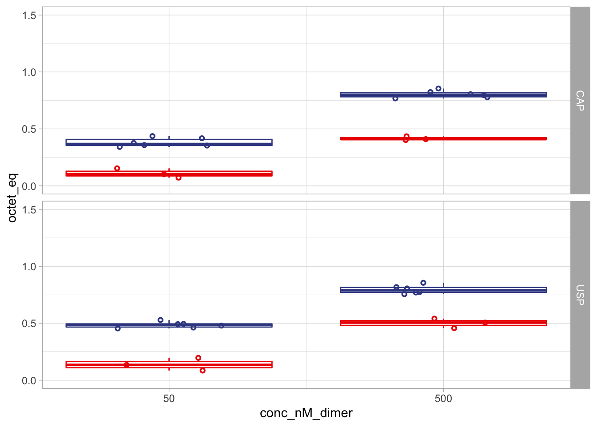
# facet_grid(expnumber ~ ligand+type)
ggsave(filename="data_pall_csv_conc_titrations_mutants_logplot_0.ps", width = 45, height = 60, units = "mm")
ggsave(filename="data_pall_csv_conc_titrations_mutants_logplot_0.jpeg", width = 45, height = 60, units = "mm")Boxplots of mutant control data at the two tested concentrations. Shown in panel B of Supplemental Figure S4.
4 assembles figures
4.1 main figure
# data_dir_sensors_USPCAP_colplot, data_pall_csv_conc_titrations_ligand_eq_fit_kd_hill_plot, data_pall_csv_conc_titrations_mutants_figplot, data_dir_sensors_BOTH_colplot
octet_combined_plot <- ggpubr::ggarrange(data_pall_csv_conc_titrations_ligand_eq_fit_kd_hill_plot, data_dir_sensors_USPCAP_colplot, data_pall_csv_conc_titrations_mutants_100nM_figplot, data_dir_sensors_BOTH_colplot, nrow = 1, ncol = 4, widths = c(2,1,2,1), align = c("hv"))
ggsave(file="octet_main_plotggplot.jpeg", plot=octet_combined_plot,device="jpeg", width = 160, height = 60, units = c("mm"))
ggsave(file="octet_main_plotggplot.ps", plot=octet_combined_plot,device="ps", width = 160, height = 60, units = c("mm"))
print(octet_combined_plot)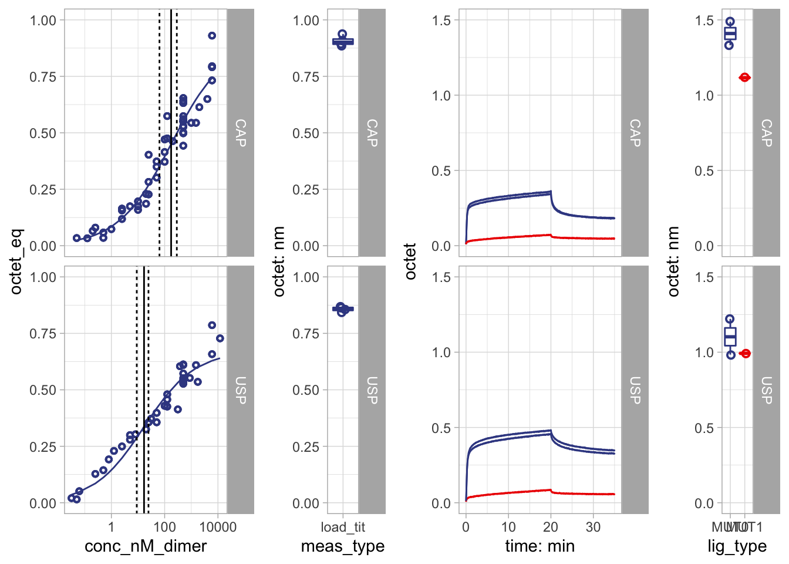
Pre-assembled Figure 2. Sensorloads were removed from the Figure in the manuscript.
4.2 supplement figure
#
octet_supplement_plot <- ggpubr::ggarrange(data_dir_all_csv_titrations_plot, data_pall_csv_conc_titrations_mutants_1000nM_figplot, data_pall_csv_conc_titrations_mutant_eq_logplot, nrow = 1, ncol = 3, widths = c(2,2,1), align = c("hv"))
ggsave(file="octet_supplement_plotggplot.jpeg", plot=octet_supplement_plot,device="jpeg", width = 160, height = 60, units = c("mm"))
ggsave(file="octet_supplement_plotggplot.ps", plot=octet_supplement_plot,device="ps", width = 160, height = 60, units = c("mm"))
print(octet_supplement_plot)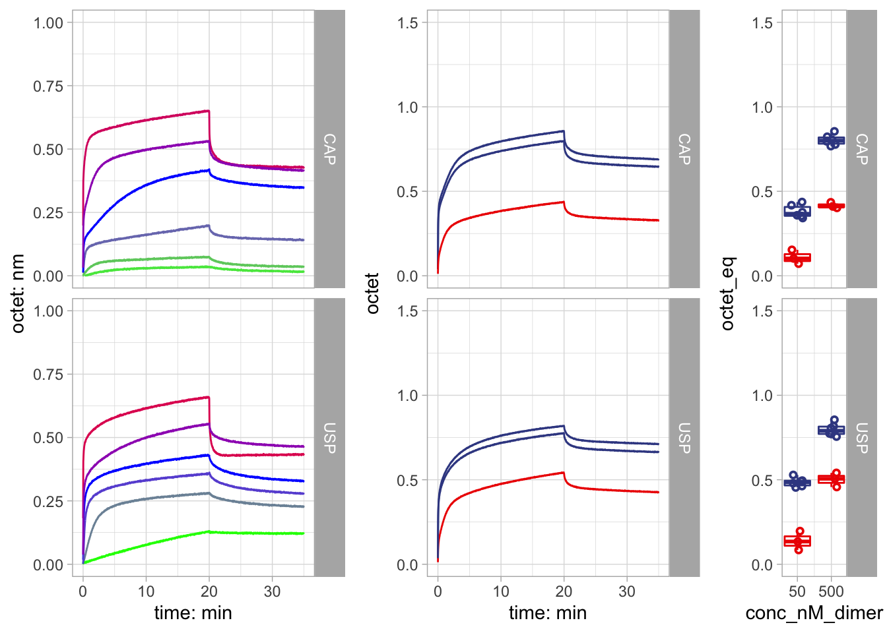
Pre-assembled Figure S4.
Plots were saved as postscript files, and edited into publication-quality figures using Adobe Illustrator.
The bookdown document was created based on bookdown, and rtemps.
Note that the echo = FALSE parameter was added to the code chunk to prevent printing of the R code that generated the plot.